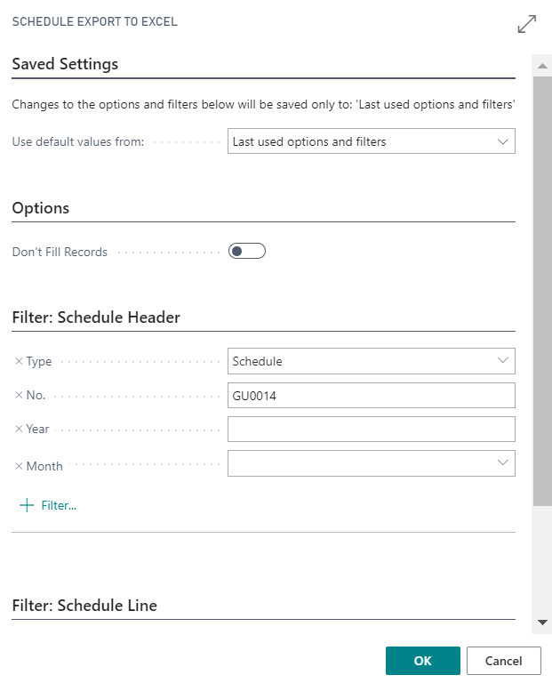
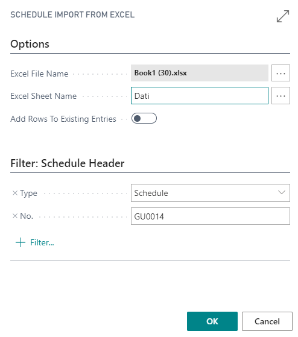

Schedule
Schedule – planned working time of the employee. It is required for system to make correct calculations in the case of a sick list A – determining which day employee must pay, on the basis of planned working hours (see chapter Absences), as well as proportion calculation of the worked time, if an employee has not worked a whole month. A Schedule should be generated timely (for example, at the beginning of the month), to be able to correctly enter the sick lists A.
The schedule is created by generating records from the employee's working time calendar.
General Information
A new schedule is made at: LV Payroll Role Center - Schedules – press + New. The number will be assigned automatically. Next choose a Year and Month, for what work time schedule will be created (automatically filled with current year and month).
Generating a list of employees
Schedule (employee list) is generated by pressing on Process - Create Lines. Graphics are filled with all those employees meeting the selected filters above and having hours from calendars.
Schedule generation with MS Excel
Schedule can be sent to Excel file and imported back to the system. To do this, the schedule must have a pre-generated list of employees (list can be and may not be filled with data from calendar). Schedule can be exported by using a function Process - Export to Excel.

Report's parameters:
Don't Fill Records – if enabled, hours in the table will not be inserted.
When the export of the Schedule was successfully made, then to newly created file can be copied data from other files or also can be added information manually. When importing this file back to the system, all information entered will be saved. It should be noted that only fields are editable in which the planned hours are. For importing back the Schedule into the system uses function Process - Import from Excel. Note that this function should be carried out in the Schedule, which was previously exported to Excel.

In order for the system to import a Schedule, the name of the Excel file must be specified (path till the file) and Sheet name of the Excel file.
Updating the Schedule before closing the reporting month
At the end of the reporting month, the Schedule must be updated to include employees hired during the month. Do this by using function Process - Create Lines. As a result, the new employees will be added to the list.